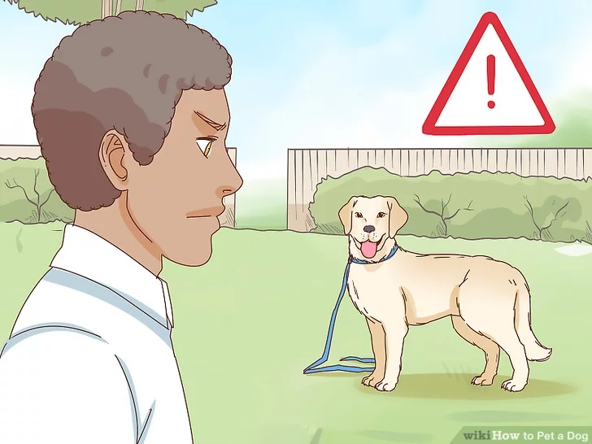
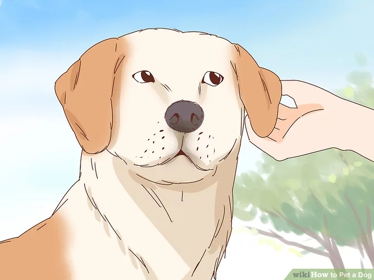
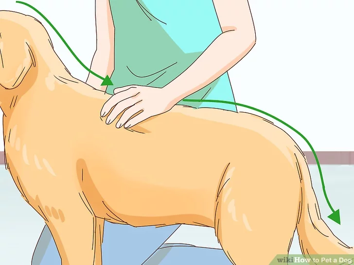

A dog might be a man's best friend, but they may not always act that way. Follow these instructions below to approach an unfamiliar dog, keep an eye out for signs of aggression, and pet it in a non-threatening way. Advice to follow when petting your own dog, or another dog you know well, is also included in its own section.
Part 1 of 3: Approaching a Dog Cautiously
Ask the owner for permission to pet the dog. The dog might look friendly, but if you don't know the dog, there is no way to tell how it reacts to strangers. If the owner gives you special instructions that differ to the ones told here, follow them. If the owner lets you pet the dog, ask the owner where the dog likes to be petted.

Be cautious if the dog has no owner. If you see a dog with no owner loose on the street, proceed carefully and stay in position to defend yourself if necessary. Dogs chained up or left in a yard or other location with limited space may be more likely to bite, as are dogs eating or chewing on something. Approach these dogs with caution, and abandon attempts to pet them at any sign of aggression, as described below.
Back off if the dog shows signs of aggression or discomfort. Signs of aggression include barking, a tail standing straight up, raised hackles, growling, or a body held in a rigid position. Signs of discomfort, fear, or anxiety include lip licking, showing the whites of the dog's eyes, avoiding eye contact, holding the tail low, yawning, or pulling the ears back.[1]. If the dog does not calm down or approach you within thirty seconds, abandon the attempt.
Bend over or squat to invite dogs to approach. Invite the dog to take the first step by squatting down closer to their level. More confident dogs only require bending over slightly, but don't bend directly over the dog, as this could make them feel threatened. Sometimes, you can help a dog to calm down by introducing yourself. Dogs introduce themselves to each other by sniffing. Humans introduce themselves to each other by shaking hands. This works with a human introducing themselves to the dog. The human holds out the back of their hand to the dog’s snout, and if it sniffs the hand, it will usually calm down.
Never squat down near a dog without an owner or a dog that is acting aggressive (see the signs listed above). Remain standing to defend yourself in case the dog attacks.
Coax shy dogs closer. If squatting down still hasn't attracted the dog, and it is acting shy or skittish (running away or hiding), look away since eye contact can be threatening. Make gentle, quiet coaxing noises; it doesn't matter what these are but avoid loud noises or noises that seem to startle the dog. Turn your body to one side to appear smaller and less threatening.
Ask the owner for the dog's name and use it to coax the dog. Some dogs have been trained to respond to the sound of their name, and they may be less shy or aggressive.
Hold out your fist. If the dog seems receptive to petting after these steps, or at least appears relaxed and shows no signs of aggression or discomfort, offer your fist for it to investigate. Hold your fist out towards its nose, but not directly against its face. Let the dog approach and sniff the back of your hand for as long as it likes. Wait until the dog is done sniffing before moving on.
Do not offer your open hand, as an unfamiliar dog may bite your fingers, thinking they are treats.
The dog sniffing you is evaluating you, not asking to be pet.
Don’t worry if a dog licks you. It’s just the dog’s way of saying they trust you and have affection for you, similar to kissing for humans.
See whether the dog is comfortable. If the dog's muscles are loose (not stiff or tense), or if it makes brief eye contact, or if it wags its tail, it is probably comfortable with you.Move on to the next section, but stop petting and offer your stationary fist again if it tries to move away.
Part 2 of 3: Petting an Unfamiliar Dog

Stroke the dog around the ears. If the dog still shows no sign of aggression, slowly stroke or gently scratch the base of the dog's ears. Approach from the side of the dog's head, not from above its face.
Move on to other areas. If you have been successful up to this point, and the dog isn't trying to shy away, continue to other areas. You may move your hand across the back, or move it to the crown, and gently scratch there with your fingers. Many dogs enjoy being scratched at the top of their back, on either side of the spine. The front end near the neck and shoulders has a lower chance of making the dog anxious than the back end near the tail and hind legs. Stay away from the dog's legs, tail, and private parts. Friendly dogs may enjoy being pet under the chin or on the chest, but others dislike strangers reaching near their jaw.
Many dogs enjoy being scratched at the top of their back, on either side of the spine. The front end near the neck and shoulders has a lower chance of making the dog anxious than the back end near the tail and hind legs.
Friendly dogs may enjoy being pet under the chin or on the chest, but others dislike strangers reaching near their jaw.
Stop if the dog reacts poorly. Be aware that some dogs are "head-shy" and do not like being petted on top of the head. Some dogs dislike having their hind-ends petted, or dislike other areas being touched. Any growl, tail down or sudden moves should signal that you need to stop what you are doing immediately and stand still. If the dog calms down again and moves towards you, continue petting in a different spot.
Don't make any sudden moves. Don't scratch suddenly or vigorously, don't pat or slap its sides, and don't move rapidly to a different area. If the dog enjoys an area being pet, you may move from stroking to light scratching, or from one hand to two hands. Keep it gentle, though, as you don't know how this unfamiliar dog may react to more energetic pets. Fast or vigorous petting can make even a friendly dog overexcited, and cause it to jump or snap at your hands.
Part 3 of 3: Petting a Familiar Dog
Learn the dog's sweet spots. As you get to know a dog, find out which types of petting it enjoys most. Some dogs like belly rubs, while some like their legs massaged. Others will growl if you get near these areas. Pay attention to the dog's body language and concentrate on areas it enjoys most. A wagging tail, relaxed muscles, and whining when you stop and move away are signs that the dog is enjoying the petting. Drooling can be a sign of excitement, although this doesn't always mean the dog is relaxed.
Be cautious about rubbing a dog's belly. When a dog is lying on its back, it may be scared and trying to appease you, not asking for pets. Even a friendly dog that enjoys belly rubs might sometimes be performing this action for another reason. Don't rub the dog's belly if it appears nervous, tense, or unhappy.
Teach children how to handle dogs. Dogs are often nervous around children, even ones they've grown up with because children can be clumsy during petting. Make sure any children in the house know not to hug, grab, or kiss the dog, as these actions performed too clumsily can stress the dog or even cause it to bite the child. Teach children never to pull on a dog's tail or throw objects at the dog.

Give the dog a thorough massage once in a while. Every so often, take 10 or 15 minutes to rub a familiar dog from head to tail. Use a circular motion to cover the dog's face, under the chin, and chest. Move on to the top of the neck, the shoulders, and back all the way to the tail. Some dogs may let you massage down each of its legs. Besides giving the dog an enjoyable massage, this will help you keep track of which "bumps" are normal and always present, and which are newly developed and could be signs of health problems.
Besides giving the dog an enjoyable massage, this will help you keep track of which "bumps" are normal and always present, and which are newly developed and could be signs of health problems.
Massage dogs and puppies on their paws. Some dogs may not let you touch their paws, but if you can safely pick up the paws, gently rub them to improve circulation and locate grit or sharp objects causing the dog pain. If the pads of the paws appear cracked and dry, ask a veterinarian for a moisturizer suitable for dogs and rub that on your dog's feet. Massaging puppies on the feet can make later nail trimming much easier, as the puppies get used to having their feet touched.
Massaging puppies on the feet can make later nail trimming much easier, as the puppies get used to having their feet touched.
Massage puppies in the mouth area. Young puppies may let you massage their mouth and feet if they know you well. Mouth massages often feel great for a teething puppy, and help the puppy get used to being handled here. This can make later dental work much easier. To massage a puppy's mouth, gently rub the cheeks and jaw in a circular pattern. To massage its gums as well, use a "finger toothbrush" from a pet store or vet office.
To massage a puppy's mouth, gently rub the cheeks and jaw in a circular pattern. To massage its gums as well, use a "finger toothbrush" from a pet store or vet office.
Tips
Always ask the owner if it's OK before giving any dog a treat. Some dogs have a sensitivity to certain foods such as gluten, which can be found in less expensive treats.
The best way to have the dog gain trust in you is to feed the dog or give it treats.
Pay attention to your dog while other people are petting him. Ask strangers politely to change petting method or stop if the dog is uncomfortable.
Put a hand on your dog if your dog is scared. This way the dog feels safe, comfortable and more relaxed.
Having a routine when meeting a new person can prevent an accident from occurring. Instead of allowing your dog to jump up, Rush towards, and be in control, having a routine, like a dog must sit when meeting new people, helps keep the situation calm, keep you in control of the dog and prevent the dog from biting or nipping the new person.
Sometimes a young dog will bark if it does not remember you. Hold out your fist and let it approach and sniff you for as long as the dog wants.
Sometimes a young dog will bark if it does not remember you. Hold out your fist and let it approach and sniff you for as long as the dog wants.
If you pet a dog that you don't know very well let the dog sniff you.
Warnings
Never pet the dog if he/she is eating or chewing on anything. Some dogs are protective of their bones or toys and may attack in order to prevent you from taking their stuff.
Even friendly dogs may be overwhelmed if more than one stranger is petting them at a time.
Never scold your dog for growling. Dogs growl to communicate that they aren't comfortable with what's happening. If you yell at your dog for growling, then next time it feels uncomfortable they may not growl, but could still bite.
Never pet an unfamiliar dog on the head, as this can be very threatening to the dog and can cause it to bite.
Do not ever approach a pack of dogs. Stray dogs are often shy and afraid of strangers, but they lose their fear in packs.
Watch out if the dog looks like it's going to bite you! Walk calmly and slowly away, while watching the dog.
Do not reach out for snow in winter - the dog may think you are going to hit it with a stone.
Do not reach out for other objects such as a smartphone while petting an unfamiliar dog - the dog may think this is a stone. Even well-known dogs may feel uncomfortable with you taking photos of them because they do not know with what purpose you are holding your smartphone.
Do not ever approach a chained dog. Dogs are very concerned about their territory and will protect it, especially chained ones. A chained dog is more likely to be unfriendly, and will probably try to bite you.Some chained dogs will bite you even without growling or showing their discontent first. Call authorities if you see a poorly treated chained dog, and always remember to be careful not to get too close to chained dogs.